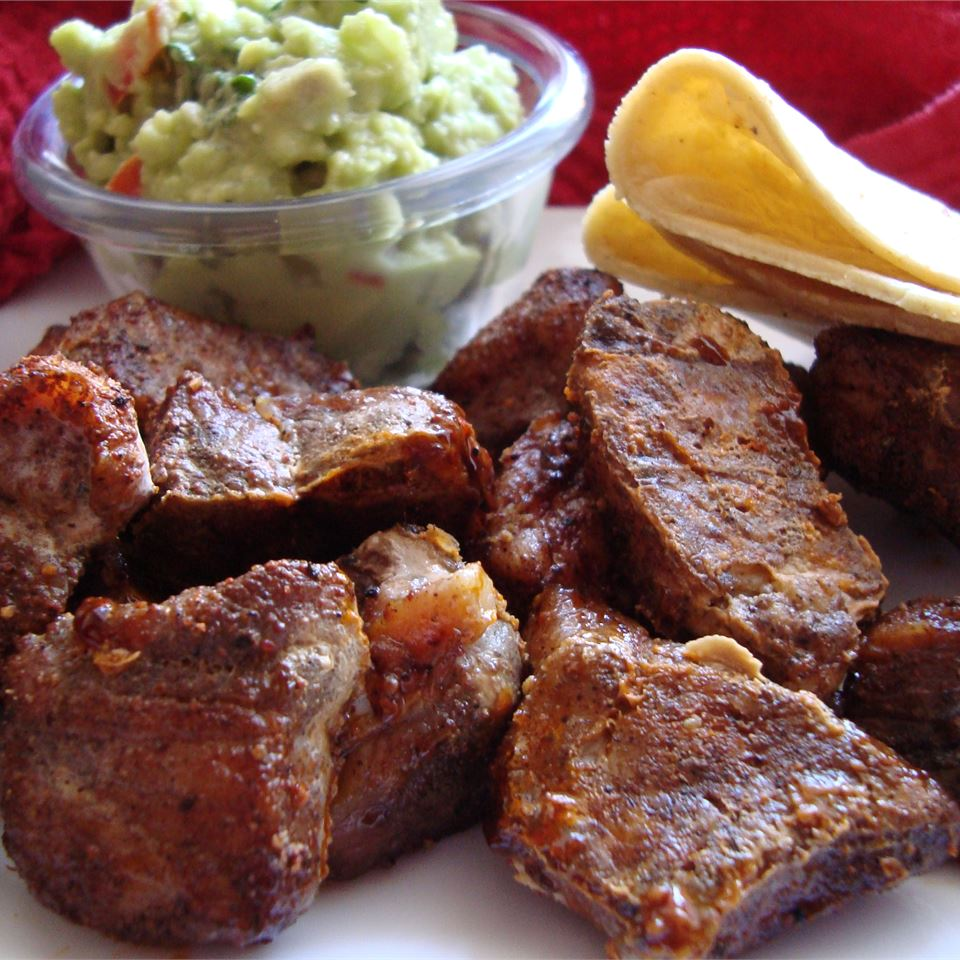

Chili Pork

Cubed pork, spiced up with chili, cumin, garlic and cilantro.
Ingredients
2 tablespoons chili powder
2 1/2 teaspoons ground cumin
2 teaspoons minced garlic
1 tablespoon fresh cilantro
2 pounds pork tenderloin, cubed
1 dash ground black pepper
Directions
Step 1
Mix together: chili powder, salt, cumin, garlic cilantro and pepper. Coat pork cubes with mixture and let sit for 45 minutes in refrigerator.
Step 2
Preheat oven to 225 degrees F (107 degrees C).
Step 3
Bake 2 hours, or until crispy.